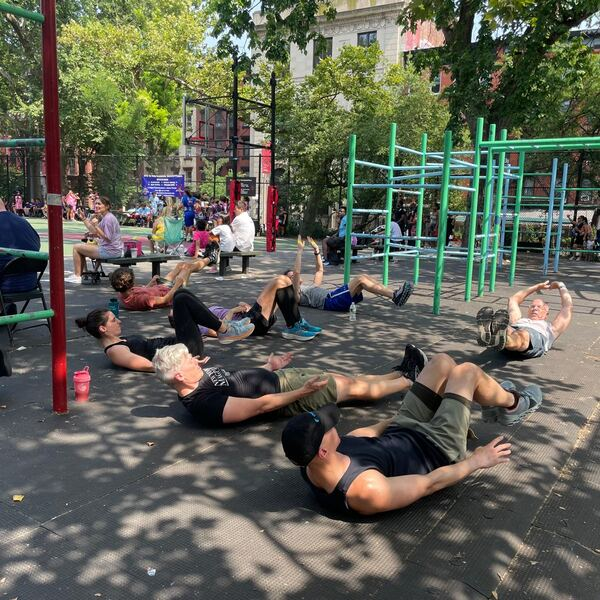
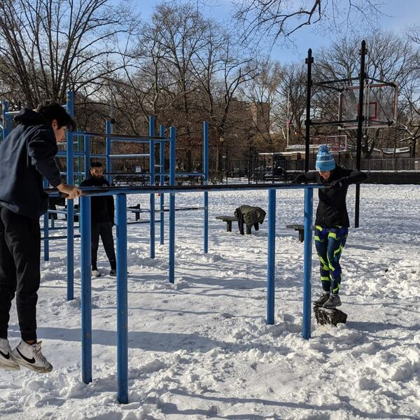
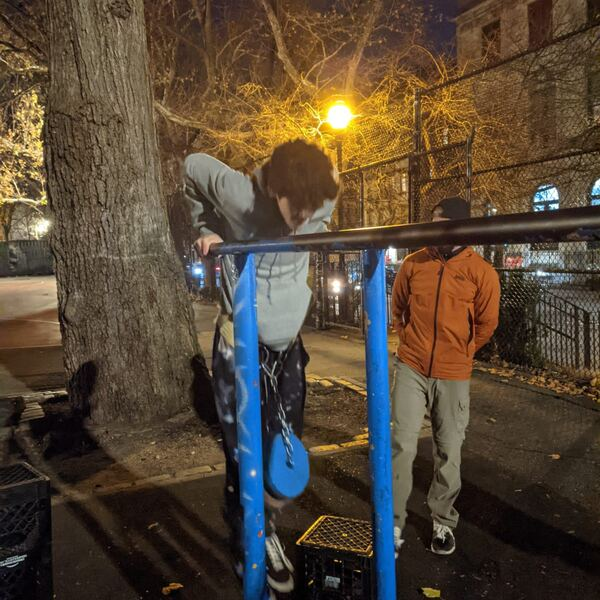
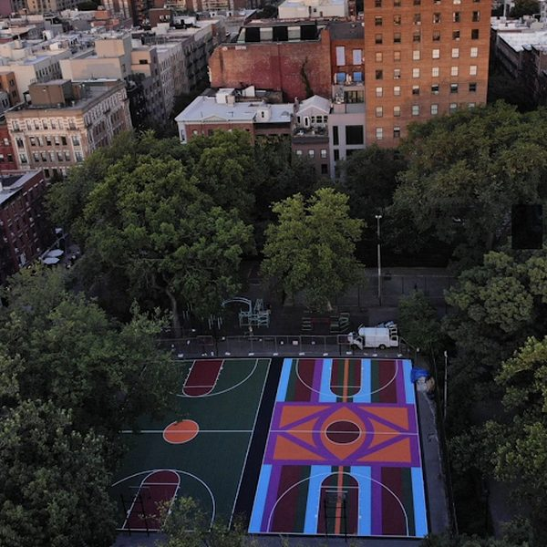
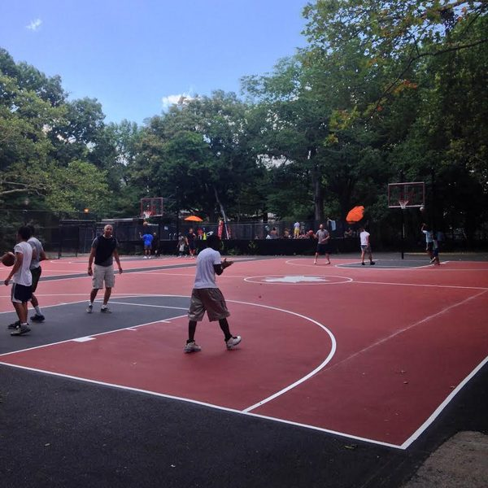
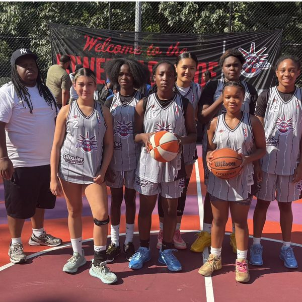

What's happening
With about $6 million from New York State earmarked for the mini pool and about $4 million more from the city, NYC Parks has money to spend. So it wants to tear down the basketball courts, the calisthenics park and the shaded courtyard, and close them for two years.
Nobody asked for this. On the contrary, the community has been consistent, loud and clear. We have no objection to an improved pool for kids, and no objection to climate resilience. That's why we want CB3 to endorse Option 3, with modifications to minimize disruption to basketball players, and to ensure the area remains accessible, as it has always been.
CB3 full board meeting, Oct 27
On Oct 15, the CB3 Parks Committee endorsed Option 1, which closes everything, for everyone, for two years. The community did not feel that it had been heard. So, on Oct 27, dozens of park users marched from the bars to PS 20 with their signs. Many more met them there to pack the room. That day, Council Member Harvey Epstein and Assembly Member Keith Powers released a statement: “We believe the existing gym equipment should be retained,” and they asked Parks for a “modified option 3.”
Several members of the public got to speak.
“These aren't just pull up bars. They're therapy, recovery, community and family.”
Jahmal, to the board, Oct 27
The full CB3 board listened, and gave us the victory we wanted. It sent the plan back to committee (CB3's vote record).
The community is what's at stake
Oct 27 showed what the bars build: a diverse, inclusive community that keeps this corner friendly, vibrant, and healthy. Close it for 18 months or more and people scatter. We saw it during Covid, when many places never bounced back after the shutdown.
What the community told Parks
This is not our spin. It is in Parks' own records.
- Jan 29, community meeting. “Fitness bars are best in city. Do not change! These are loved!” “Fitness area is vital, don't close this area to the public at all.” “Do not close the basketball courts at all.” (Parks' notes)
- May 16, tabling session in the park. “The general feedback was in favor of keeping the courts and fitness areas untouched.” “Phasing was requested to reduce the duration of closure.” “The tabling session confirmed the same feedback that was heard during the Community Input Meeting.” (Parks' minutes)
- Oct 15, Parks' presentation to CB3. “We heard how cherished the fitness and the basketball courts are.” “We know how beloved it is of a neighborhood. We know that people come from far and wide to use these very neat bars… it transcends demographics, young and old.”
- Oct 27, Parks at the CB3 full board meeting. “We've evaluated the existing equipment. We think it's incredible as you do.”
Parks heard us, loud and clear. Then it proposed to close everything, for everyone, for two years anyway.
Used every day, all year






Basketball photos by EV Grieve and @jcproclassicbasketball
“It’s a shared public space open to everyone. It’s diverse. The place is overflowing with mutual support. I’ve never seen anywhere else like it in all my time in NYC… Let’s not destroy an offline community, at a time when it’s never been more necessary or harder to find.”
Joe · Read the full statement
Read more voices from the park →
Option 1 does the reverse of what CB3 stands for
- Less affordable. It takes away a free outdoor gym and courts, used every day by people who can't pay for a gym, for two years.
- Less inclusive. It razes the courtyard where deliveristas rest in the shade, to "get rid of some of the undesirable use," in Parks' own words. That is hostile architecture.
- Less accessible. It closes the area for everyone for two years. The bars are versatile, used by people of different ages and abilities, including for rehabilitation after injury. Accessibility can be improved by addition, not demolition.
Let's get a better plan
- Respect the people who use the park. It does not count as listening if you don't listen
- Upgrade the pool
- Repair the courts and the calisthenics surface
- Keep the courtyard open, so delivery workers have a place to rest
- Make the area more accessible
- Never close everything at once
- Preserve this area as an epicenter of wellbeing, affordability and community
We are not arguing that nothing ever needs repair. We are arguing that Parks is misrepresenting the status of the park and using repairable problems to justify a much larger, more disruptive reconstruction. The result will be a city that is less affordable, less equal and less inclusive.
What Parks isn't telling you
Parks has made many assertions, but did not present evidence. Read our FAQ →
In the news
- EV GrieveTompkins Square Park recreation redesign heads back to committee after contentious CB3 meetingOct 29, 2026
- NPR/WNYC Headlines, radioEast Village community board delays action on Tompkins Square Park overhaulOct 28, 2026 · 2pm headlines · 1 min
- Gothamist'If this is what you want': East Village board halts vote on Tompkins Square overhaulOct 28, 2026
- EV GrieveToday in Tompkins Square Park: A meetup to support the bars and courtsOct 25, 2026
- The New York TimesNew Fight at Gritty Manhattan Park Is Over ‘Punk Rock’ Pull-Up BarsOct 25, 2026
- WBAI 99.5 FM, radioFrontline Voices with Rebecca Myles: the Tompkins Square Park renovation and Tue's voteOct 23, 2026 · 15 min · Full episode on WBAI
- Time Out New YorkTompkins Square Park's $10 million makeover will include a kiddie pool, a new outdoor gym and eco upgradesOct 22, 2026 · Reprinted by Yahoo News
- EV GrieveCB3 committee backs major overhaul of Tompkins Square Park recreation areaOct 21, 2026
- NewYorkNewsTompkins Square Park rebuild of pool, courts and outdoor gym wins East Village board committee, over regulars' objectionsOct 17, 2026
- HoodlineTompkins Square Park Renovation Plan Divides East VillageOct 17, 2026
- GothamistTompkins Square Park is getting a makeover. Some say it's too much.Oct 17, 2026
- EV GrieveParks to present 3 options for Tompkins Square recreation areaOct 14, 2026
- EV GrievePetition to preserve Tompkins Square Park fitness area tops 2,000 signaturesJul 27, 2026
- GothamistLatest East Village preservation fight: This pull-up bar in Tompkins Square ParkJul 20, 2026
- WNYC, videoThe fight to preserve the pull-up bars at Tompkins Square ParkJul 20, 2026
- Al Kavadlo, videoThe Iconic Calisthenics Bars at Tompkins Square Park are in Jeopardy (We Need Your Help)May 26, 2026
- EV GrieveParks Department seeks input on Tompkins recreation-area upgradesMay 14, 2026
- EV GrieveVirtual meeting set for Tompkins mini-pool and basketball courts redesignJan 27, 2026
Documents
- CB3 full board vote record, Oct 27, 2026 (PDF). The Tompkins item starts on page 13 and ends on page 16, "TO REFER BACK TO COMMITTEE."
- Statement by Council Member Harvey Epstein and Assembly Member Keith Powers, Oct 27, 2026 (Instagram). They ask Parks for a modified Option 3.
- CB3 Parks Committee meeting, Oct 15, 2026 (video, YouTube). CB3's official recording.
- NYC Parks presentation to CB3, Oct 15, 2026 (PDF, 17 MB). Budget and funding on page 1, the "debris" on page 23, the "code" footnote on page 24.
- NYC Parks minutes of the tabling session, May 16, 2026 (PDF, 2 pages). Obtained through a FOIL request.
- NYC Parks notes from the Community Input Meeting, Jan 29, 2026 (PDF, 1 page). Obtained through a FOIL request.
- NYC Parks presentation at the Community Input Meeting, Jan 29, 2026 (PDF, 15 MB). Obtained through a FOIL request.